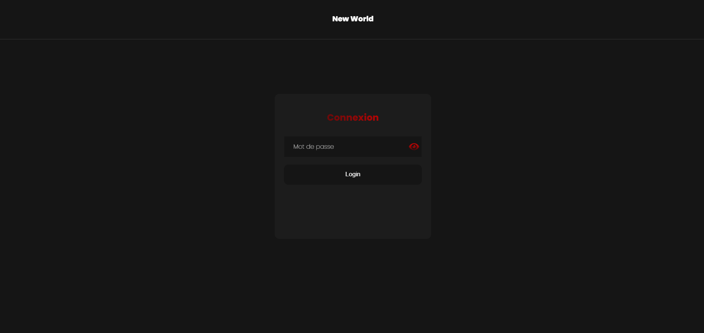
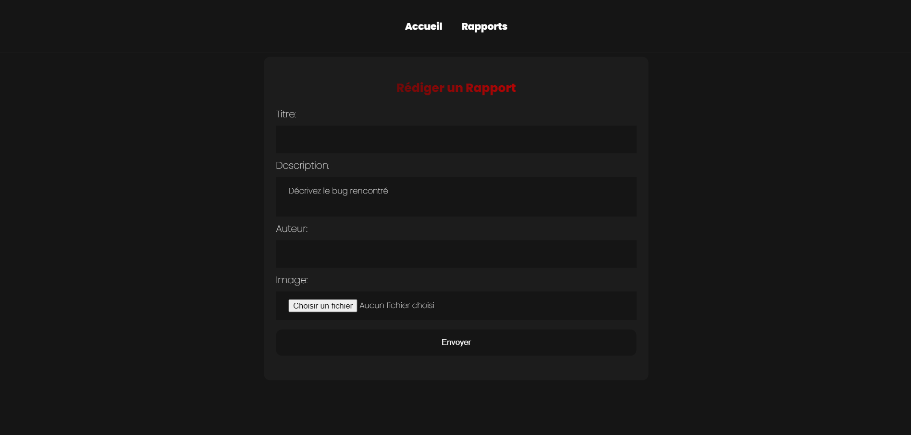
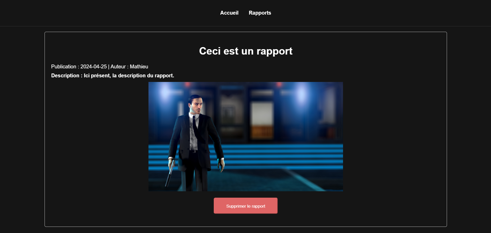
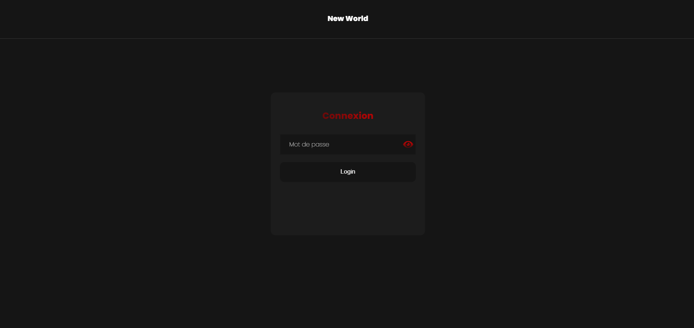
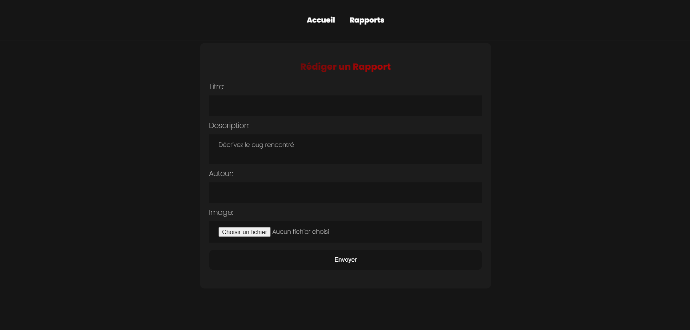
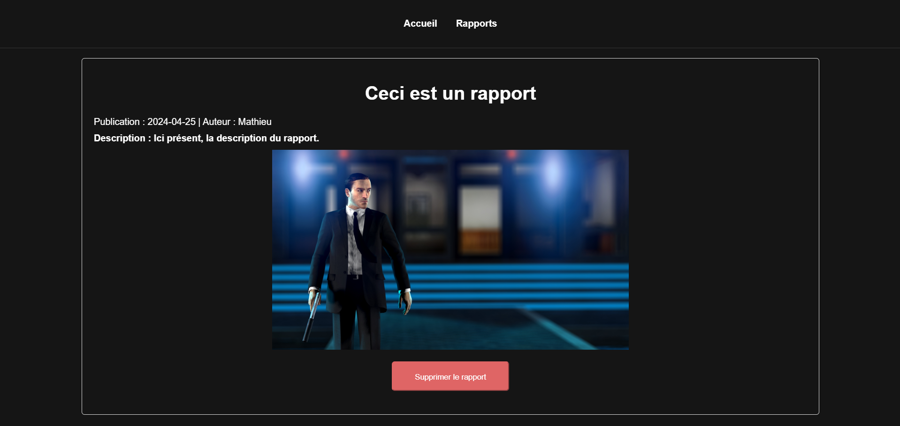

Organisations
Travail en Groupe
Gestion de données
JavaScript
En Décembre 2023 de première année, nous avons pu réaliser un projet en équipe de 4. Notre objectif était de créer un site sur un thème choisi,
Notre site, avec une prise en main très rapide, proposait premièrement un catalogue de fromage complet, ainsi qu'une description complète pour chaque fromage. Pour ce qui est du système d'achat nous étions limiter à la mise en panier.
Nous avons donc également crée une Base de donnée permettant de stocker les informations Clients
Les quelques autres données utilisées vis à vis des Fromages :
Étant donné que ce projet était à faire en Équipe, nous avons eu besoin de nous organiser sur la répartition des tâches. Nous avons donc utiliser Trello.

Organisations
Travail en Groupe
Gestion de données
JavaScript
Pour ce projet, je l'ai réalisé totalement seul, j'avais pour but de créer un site, pour un serveur de jeu en ligne.
Pour ce projet les langages utilisés étaient du HTML, CSS, PHP, JavaScript.


 





Le but initial de ce projet était de designer un site respectant la mise en forme des sites de jeu similaires, tout en y ajoutant du nouveau. Les informations présentes sur le site étaient destinées à aider les utilisateurs, également ils pouvaient y trouver des informations relatives à la
La base de donnée a été réalisé afin de stocker les informations relatives à des rapports crée par rapport à des bugs trouvés sur le serveur. La suite logique était de créer un système permettant de supprimer un rapport directement depuis le site, ce qui a pu être fait, ce dernier est supprimé à l'aide de l'ID.

PHP
Travail en Autonomie
Respect cahier des charges